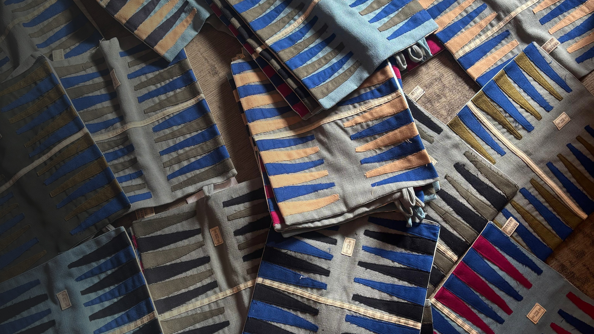

Why we exist
Waste, made worth keeping
YourTurn started as a project from the UCT Genesis programme, built around a simple problem: textile waste is piling up across the continent, and almost none of it gets a second look. We intercept curtain scraps, clothing off-cuts and leftover fabric before they hit a landfill, and turn them into something people actually want to hold onto.
Every board is cut, matched and hand-stitched by our NGO partner, The Sewing Café, in Masiphumelele — turning waste into real skills and income, not just a good story on a label. Made to be played barefoot, no wifi required.

40–50%
of textile production ends up as waste
70 tonnes
of textile waste generated daily, across Africa
<1%
of that waste is recycled or repurposed
No single board is the same — and that's exactly how it should be.
Follow the boards being made
Behind-the-scenes fabric collecting, boards in progress, and boards out in the wild.